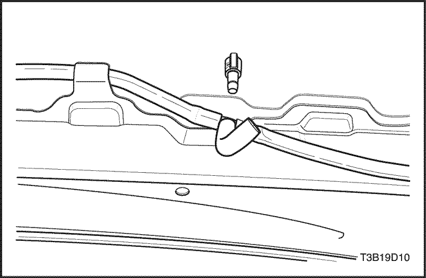

SECCIÓN 9D
SISTEMAS DE LIMPIAPARABRISAS/LAVAPARABRISAS
Precaución: Desconecte el cable negativo de la batería antes de quitar o instalar cualquier equipo eléctrico o siempre que algún equipo o herramienta pueda entrar en contacto con las terminales eléctricas expuestas. Al desconectar este cable, ayudará a evitar lesiones personales y daños al vehículo. El encendido también debe estar en la posición LOCK (bloqueado), a menos que se indique lo contrario.
ESPECIFICACIONES
Especificaciones de apriete
| Aplicación | N•m | Lb-Ft | Lb-pulgada |
| Tornillos de guardasalpicaduras de hueco de rueda delantera | 1.5 | - | 13 |
| Pernos y tuercas del depósito del líquido lavaparabrisas | 9 | - | 80 |
| Tuerca del varillaje del brazo del limpiaparabrisas | 8.5 | - | 75 |
| Tuerca del brazo del limpiaparabrisas | 15 | - | 133 |
| Pernos del motor del limpiaparabrisas | 9 | - | 80 |
DIAGRAMAS DE ESQUEMAS Y DIRECCIONES
Limpiaparabrisas y sistema de lavado (Notchback)
Limpiaparabrisas y sistema de lavado (Hatchback)
Limpiaparabrisas del parabrisas y ventanilla trasera y sistema de lavado (DCHA)
DIAGNOSTICO
Escobillas de limpiaparabrisas intermitente
Los limpiaparabrisas No funcionan a ninguna velocidad
| Paso | Medida | Valor(es) | Sí | No |
| 1 | Compruebe el fusible F17. ¿Está fundido el fusible F17? | - | Vaya al Paso 2 | Vaya al Paso 3 |
| 2 | - Compruebe que si hay cortocircuito y repárelo en caso necesario.
- Sustituya el fusible.
¿Está completa la reparación? | - | Sistema Bien | - |
| 3 | Compruebe la tensión de la batería en el fusible F17. ¿Existe tensión de la batería en el fusible F17? | 11-14 v | Vaya al Paso 5 | Vaya al Paso 4 |
| 4 | Repare el circuito abierto en la alimentación de tensión al fusible F17. ¿Está completa la reparación? | - | Sistema Bien | - |
| 5 | - Gire el encendido a ON.
- Gire el interruptor del limpiaparabrisas a alta (HI).
¿Existe tensión de la batería en el terminal 6 del conector del motor del limpiaparabrisas? | 11-14 v | Vaya al Paso 6 | Vaya al Paso 7 |
| 6 | Sustituya el motor del limpiaparabrisas averiado. ¿Está completa la reparación? | - | Sistema Bien | - |
| 7 | - Desenchufe el conector del interruptor del limpiaparabrisas.
- Gire el encendido a ON.
- Con un voltímetro, compruebe la tensión de la batería en el terminal 8 del conector.
¿Existe tensión de la batería en el terminal 8 del conector del interruptor del limpiaparabrisas? | 11-14 v | Vaya al Paso 9 | Vaya al Paso 8 |
| 8 | Repare el circuito abierto entre el terminal 8 del conector del interruptor de limpiaparabrisas y el fusible F17. ¿Está completa la reparación? | - | Sistema Bien | - |
| 9 | - Utilice un ohmiómetro para probar la continuidad del conmutador de limpiaparabrisas.
- Gire el conmutador de limpiaparabrisas hasta la posición HI. Compruebe la continuidad entre los terminales 8 y 9 del conmutador de limpiaparabrisas.
¿Existe continuidad entre los terminales 8 y 9? | 0 Ω | Vaya al Paso 11 | Vaya al Paso 10 |
| 10 | Sustituya el conmutador del limpiaparabrisas averiado. ¿Está completa la reparación? | - | Sistema Bien | - |
| 11 | Repare el circuito abierto entre el interruptor de limpiaparabrisas y el motor de limpiaparabrisas. ¿Está completa la reparación? | - | Sistema Bien | - |
Los limpiaparabrisas No funcionan a velocidad alta (HI), pero sí funcionan en baja (LO).
| Paso | Medida | Valor(es) | Sí | No |
| 1 | - Gire el encendido a ON.
- Gire el interruptor del limpiaparabrisas a alta (HI).
¿Existe tensión de la batería en el terminal 6 del conector del motor del limpiaparabrisas? | 11-14 v | Vaya al Paso 2 | Vaya al Paso 3 |
| 2 | Sustituya el motor del limpiaparabrisas averiado. ¿Está completa la reparación? | - | Sistema Bien | - |
| 3 | - Utilice un ohmiómetro para probar la continuidad del conmutador de limpiaparabrisas.
- Gire el conmutador de limpiaparabrisas hasta la posición HI. Compruebe la continuidad entre los terminales 8 y 9 del conmutador de limpiaparabrisas.
¿Existe continuidad entre los terminales 8 y 9? | 0 Ω | Vaya al Paso 5 | Vaya al Paso 4 |
| 4 | Sustituya el conmutador del limpiaparabrisas averiado. ¿Está completa la reparación? | - | Sistema Bien | - |
| 5 | Repare el circuito abierto entre el terminal 9 del conector del interruptor de limpiaparabrisas y el terminal 6 del conector del motor de limpiaparabrisas. ¿Está completa la reparación? | - | Sistema Bien | - |
Los limpiaparabrisas No funcionan a velocidad baja (LO), pero sí funcionan en alta (HI).
| Paso | Medida | Valor(es) | Sí | No |
| 1 | - Gire el encendido a ON.
- Gire el interruptor del limpiaparabrisas a baja (LO).
¿Existe tensión de la batería en el terminal 5 del conector del motor del limpiaparabrisas? | 11-14 v | Vaya al Paso 2 | Vaya al Paso 3 |
| 2 | Sustituya el motor del limpiaparabrisas averiado. ¿Está completa la reparación? | - | Sistema Bien | - |
| 3 | - Utilice un ohmiómetro para probar la continuidad del conmutador de limpiaparabrisas.
- Gire el conmutador de limpiaparabrisas hasta la posición LO. Compruebe la continuidad entre los terminales 8 y 5 del conmutador de limpiaparabrisas.
¿Existe continuidad entre los terminales 8 y 5? | 0 Ω | Vaya al Paso 5 | Vaya al Paso 4 |
| 4 | Sustituya el conmutador del limpiaparabrisas averiado. ¿Está completa la reparación? | - | Sistema Bien | - |
| 5 | Repare el circuito abierto entre el terminal 5 del conector del interruptor de limpiaparabrisas y el terminal 5 del conector del motor de limpiaparabrisas. ¿Está completa la reparación? | - | Sistema Bien | - |
Los limpiaparabrisas No funcionan en intermitente, pero sí funcionan en otras velocidades.
Ayudas de diagnóstico
El relé del limpiaparabrisas se ubica detrás del tablero de instrumentos, debajo del interruptor del atenuador del multiterminal. Retire el interruptor del atenuador del multiterminal y la cubierta lateral del tablero de instrumentos para acceder al relé del limpiaparabrisas.
| Paso | Medida | Valor(es) | Sí | No |
| 1 | - Gire el encendido a ON.
- Con un voltímetro, compruebe la tensión de la batería en el terminal 15 del conector del relé del limpiaparabrisas.
¿Existe tensión de la batería en el terminal 15 del conector? | 11-14 v | Vaya al Paso 3 | Vaya al Paso 2 |
| 2 | Repare el circuito abierto entre el terminal 15 del conector del relé del limpiaparabrisas y el fusible F17. ¿Está completa la reparación? | - | Sistema Bien | - |
| 3 | - Gire el encendido a ON.
- Gire el interruptor del limpiaparabrisas a intermitente (INT).
Usando un voltímetro, ¿existe tensión de la batería en el terminal I del conector del relé del limpiaparabrisas? | 11-14 v | Vaya al Paso 7 | Vaya al Paso 4 |
| 4 | - Gire el encendido a ON.
- Gire el interruptor del limpiaparabrisas a intermitente (INT).
Usando un voltímetro, ¿existe tensión de la batería en el terminal 7 del conector del relé del limpiaparabrisas? | 11-14 v | Vaya al Paso 6 | Vaya al Paso 5 |
| 5 | Sustituya el interruptor del limpiaparabrisas. ¿Está completa la reparación? | - | Sistema Bien | - |
| 6 | Repare el circuito abierto entre el terminal 7 del conector del conmutador del limpiaparabrisas y el terminal I del conector del relé del limpiaparabrisas. ¿Está completa la reparación? | - | Sistema Bien | - |
| 7 | - Gire el encendido a ON.
- Gire el interruptor del limpiaparabrisas a intermitente (INT).
Usando un voltímetro ¿ se detecta pulso de la batería en el terminal 53e del conector del relé del limpiaparabrisas? | 11-14 v | Vaya al Paso 11 | Vaya al Paso 8 |
| 8 | Mediante un ohmiómetro, compruebe el circuito de masa del relé del limpiaparabrisas (terminal 31 del conector). ¿Está bien el circuito de masa? | 0 Ω | Vaya al Paso 10 | Vaya al Paso 9 |
| 9 | Repare el circuito abierto a la masa. ¿Está completa la reparación? | - | Sistema Bien | - |
| 10 | Sustituya el relé del limpiaparabrisas. ¿Está completa la reparación? | - | Sistema Bien | - |
| 11 | - Desenchufe el conector del interruptor del limpiaparabrisas.
- Gire el interruptor del limpiaparabrisas a intermitente (INT).
- Con un ohmiómetro, compruebe el conmutador de limpiaparabrisas.
¿Existe continuidad entre los terminales 5 y 6? | 0 Ω | Vaya al Paso 13 | Vaya al Paso 12 |
| 12 | Sustituya el conmutador del limpiaparabrisas averiado. ¿Está completa la reparación? | - | Sistema Bien | - |
| 13 | Repare el circuito abierto entre el interruptor de limpiaparabrisas y el relé de limpiaparabrisas. ¿Está completa la reparación? | - | Sistema Bien | - |
Los limpiaparabrisas no vuelven a su posición de parada
| Paso | Medida | Valor(es) | Sí | No |
| 1 | - Gire el encendido a ON.
- Utilice un voltímetro para probar la tensión de la batería en el motor del limpiaparabrisas.
¿Existe tensión de la batería en el terminal 3 del conector del motor del limpiaparabrisas? | 11-14 v | Vaya al Paso 3 | Vaya al Paso 2 |
| 2 | Repare el circuito abierto entre el motor del limpiaparabrisas y el fusible F17. | - | Sistema Bien | - |
| 3 | - Gire el encendido a ON
- Gire el interruptor del limpiaparabrisas a alta (HI).
- Utilice un voltímetro para probar la existencia de pulso en la alimentación de la batería en el motor del limpiaparabrisas en el momento de girar el conmutador del limpiaparabrisas a la posición OFF.
Al cambiar la posición del conmutador del limpiaparabrisas a la posición OFF ¿existe pulso de la tensión de la batería en el terminal 2 del conector del motor del limpiaparabrisas? | 11-14 v | Vaya al Paso 5 | Vaya al Paso 4 |
| 4 | Sustituya el motor del limpiaparabrisas averiado. ¿Está completa la reparación? | - | Sistema Bien | - |
| 5 | - Gire el encendido a ON.
- Gire el interruptor del limpiaparabrisas a alta (HI).
- Utilice un voltímetro para probar la existencia de pulso en la alimentación de la batería en el relé del limpiaparabrisas en el momento de girar el conmutador del limpiaparabrisas a la posición OFF.
Al cambiar la posición del conmutador del limpiaparabrisas a la posición OFF ¿existe pulso de la tensión de la batería en el terminal 31b del conector del relé del limpiaparabrisas? | 11-14 v | Vaya al Paso 7 | Vaya al Paso 6 |
| 6 | Repare el circuito abierto entre el motor del limpiaparabrisas y el relé del limpiaparabrisas. ¿Está completa la reparación? | - | Sistema Bien | - |
| 7 | - Desconecte el relé del limpiaparabrisas del conector.
- Utilice un ohmiómetro para probar la continuidad del relé.
¿Existe continuidad entre los terminales 31b y 53e del conector del relé del limpiaparabrisas? | 0 Ω | Vaya al Paso 9 | Vaya al Paso 8 |
| 8 | Sustituya el relé del limpiaparabrisas averiado. ¿Está completa la reparación? | - | Sistema Bien | - |
| 9 | Sustituya el conmutador del limpiaparabrisas averiado. ¿Está completa la reparación? | - | Sistema Bien | - |
Sistema de lavaparabrisas
El lavaparabrisas no funciona, los limpiaparabrisas están bien
| Paso | Medida | Valor(es) | Sí | No |
| 1 | ¿Los limpiaparabrisas funcionan cuando se activa el interruptor del lavaparabrisas? | - | Vaya al Paso 4 | Vaya al Paso 2 |
| 2 | - Gire el encendido a ON.
- Al tiempo que acciona el conmutador del lavaparabrisas, utilice un voltímetro para probar la tensión de la batería en el conmutador de la escobilla de limpiaparabrisas.
¿Existe tensión de la batería en el terminal 4 del conector del conmutador de la escobilla de limpiaparabrisas? | 11-14 v | Vaya al Paso 8 | Vaya al Paso 3 |
| 3 | Sustituya el interruptor de la escobilla del limpiaparabrisas. ¿Está completa la reparación? | - | Sistema Bien | - |
| 4 | ¿Hay líquido lavaparabrisas en el depósito de líquido del lavaparabrisas? | - | Vaya al Paso 6 | Vaya al Paso 5 |
| 5 | Llene el depósito del lavaparabrisas. ¿Está completa la reparación? | - | Sistema Bien | - |
| 6 | ¿Están obstruidas o dañadas las mangueras o boquillas del lavaparabrisas? | - | Vaya al Paso 7 | Vaya al Paso 8 |
| 7 | Repare las mangueras y boquillas del lavaparabrisas. ¿Está completa la reparación? | - | Sistema Bien | - |
| 8 | - Gire el encendido a ON.
- Con el lavaparabrisas activado, utilice un voltímetro para probar la tensión de la batería en la bomba del lavaparabrisas.
¿Existe tensión de la batería disponible en la bomba del lavaparabrisas? | 11-14 v | Vaya al Paso 10 | Vaya al Paso 9 |
| 9 | Repare el circuito abierto entre la bomba del lavaparabrisas y el interruptor del lavaparabrisas. ¿Está completa la reparación? | - | Sistema Bien | - |
| 10 | Utilice un ohmiómetro para comprobar el circuito de masa en la bomba del lavaparabrisas. ¿Está bien el circuito de masa? | 0 Ω | Vaya al Paso 12 | Vaya al Paso 11 |
| 11 | Repare el circuito de masa de la bomba del lavaparabrisas. ¿Está completa la reparación? | - | Sistema Bien | - |
| 12 | Sustituya la bomba del lavaparabrisas. ¿Está completa la reparación? | - | Sistema Bien | - |
Limpiaparabrisas de la ventana trasera (Hatchback)
Ayudas de diagnóstico
Si los limpiaparabrisas delanteros funcionan correctamente, comience la tabla de diagnóstico en el paso 5. No es necesario comprobar el fusible o el circuito de alimentación eléctrica.
Limpiaparabrisas de la ventana trasera (Hatchback)
| Paso | Medida | Valor(es) | Sí | No |
| 1 | Compruebe el fusible F17. ¿Está fundido el fusible F17? | - | Vaya al Paso 2 | Vaya al Paso 3 |
| 2 | - Compruebe que si hay cortocircuito y repárelo en caso necesario.
- Sustituya el fusible F17.
¿Está completa la reparación? | - | Sistema Bien | - |
| 3 | - Gire el encendido a ON.
- Compruebe la tensión en el fusible F17.
¿La tensión es igual al valor especificado? | 11-14 v | Vaya al Paso 5 | Vaya al Paso 4 |
| 4 | Repare el circuito abierto del fusible F17 de la fuente de alimentación. ¿Está completa la reparación? | - | Sistema Bien | - |
| 5 | - Desenchufe el conector eléctrico del motor del limpiaparabrisas trasero.
- Gire el encendido a ON.
- Compruebe la tensión en el cable ROJO/AZU OS del conector eléctrico del motor del limpiaparabrisas.
¿La tensión es igual al valor especificado? | 11-14 v | Vaya al Paso 7 | Vaya al Paso 6 |
| 6 | Repara el circuito abierto para el cable ROJO entre el fusible F17 y el conector en el motor del limpiaparabrisas trasero. ¿Está completa la reparación? | - | Sistema Bien | - |
| 7 | Con el motor del limpiaparabrisas trasero aún desconectado, utilice un ohmiómetro para comprobar la continuidad entre la masa y el cable NEG del conector del motor del limpiaparabrisas trasero. ¿Se indica la resistencia correcta en el ohmiómetro? | ≈ 0 Ω | Vaya al Paso 9 | Vaya al Paso 8 |
| 8 | Repare el circuito abierto de la masa para el motor de limpiaparabrisas trasero. ¿Está completa la reparación? | - | Sistema Bien | - |
| 9 | - Gire el encendido a ON.
- Encienda el limpiaparabrisas trasero.
- Compruebe la tensión en el cable GRI/ROJO en el conector eléctrico del motor del limpiaparabrisas trasero.
¿El voltímetro indica el valor especificado? | 11-14 v | Vaya al Paso 10 | Vaya al Paso 11 |
| 10 | Sustituya el motor del limpiaparabrisas trasero. ¿Está completa la reparación? | - | Sistema Bien | - |
| 11 | - Desenchufe el conector eléctrico del interruptor del limpiaparabrisas.
- Gire el encendido a ON.
- Compruebe la tensión en el terminal 3 (VERDE/ROJO) ó 1 (con intermitente trasero).
¿La tensión es igual al valor especificado? | 11-14 v | Vaya al Paso 13 | Vaya al Paso 12 |
| 12 | Repare el circuito abierto entre el terminal 3 del conector del interruptor del limpiaparabrisas y el fusible F17 (1). ¿Está completa la reparación? | - | Sistema Bien | - |
| 13 | - Conecte un ohmiómetro entre los terminales 1 y 3 del interruptor del limpiaparabrisas.
- Observe el ohmiómetro cuando el limpiaparabrisas trasero es movido a la posición WIPE (barrido).
¿Se indica la resistencia correcta en el ohmiómetro? | ≈ 0 Ω | Vaya al Paso 14 | Vaya al Paso 15 |
| 14 | Repare el circuito abierto entre el terminal 1 del conector del limpiaparabrisas (cable GRI) y el motor del limpiaparabrisas trasero. ¿Está completa la reparación? | - | Sistema Bien | - |
| 15 | Sustituya el interruptor del limpiaparabrisas. ¿Está completa la reparación? | - | Sistema Bien | - |
Sistema de lavaparabrisas de la ventana trasera (Hatchback)
| Paso | Medida | Valor(es) | Sí | No |
| 1 | Compruebe el nivel del depósito del lavaparabrisas. ¿Hay líquido limpiador en el depósito del lavaparabrisas? | - | Vaya al Paso 3 | Vaya al Paso 2 |
| 2 | Llene el depósito del lavaparabrisas. ¿Está completa la reparación? | - | Sistema Bien | - |
| 3 | Verifique que las mangueras no estén obstruidas ni tengan pérdidas, desconectando la manguera del lavaparabrisas y soplando por ella hacia el depósito y también hacia la boquilla. ¿Las mangueras están obstruidas o tienen pérdidas? | - | Vaya al Paso 4 | Vaya al Paso 5 |
| 4 | Repare o sustituya las mangueras. ¿Está completa la reparación? | - | Sistema Bien | - |
| 5 | Compruebe el funcionamiento del limpiaparabrisas trasero. ¿Funciona correctamente el limpiaparabrisas trasero? | - | Vaya al Paso 7 | Vaya al Paso 6 |
| 6 | Repare el limpiaparabrisas trasero. ¿Está completa la reparación del limpiaparabrisas trasero? | - | Vaya al Paso 7 | - |
| 7 | - Desenchufe el conector eléctrico en la bomba del lavaparabrisas trasero.
- Utilice un ohmiómetro para comprobar la continuidad entre el cable NEG del conector de la bomba del lavaparabrisas trasero y la masa.
¿Se indica la resistencia correcta en el ohmiómetro? | ≈ 0 Ω | Vaya al Paso 9 | Vaya al Paso 8 |
| 8 | Repare el circuito abierto o la alta resistencia de la conexión a la masa. ¿Está completa la reparación? | - | Sistema Bien | - |
| 9 | Compruebe la tensión en el conector de la bomba del lavaparabrisas (cable VER CL/NEG) cuando el lavaparabrisas trasero esté en la posición ON. ¿La tensión es igual al valor especificado? | 11-14 v | Vaya al Paso 10 | Vaya al Paso 11 |
| 10 | Sustituya la bomba del lavaparabrisas trasero. ¿Está completa la reparación? | - | Sistema Bien | - |
| 11 | - Desconecte el interruptor del limpiaparabrisas.
- Conecte un ohmiómetro entre los terminales 2 y 3 del conmutador del limpiaparabrisas.
- Observe el ohmiómetro cuando el limpiaparabrisas trasero es movido a la posición WASH (lavado).
¿Se indica la resistencia correcta en el ohmiómetro? | ≈ 0 Ω | Vaya al Paso 12 | Vaya al Paso 13 |
| 12 | Repare el circuito abierto entre el terminal 2 del conector del conmutador del limpiaparabrisas y la bomba del lavaparabrisas trasero. ¿Está completa la reparación? | - | Sistema Bien | - |
| 13 | Sustituya el interruptor del limpiaparabrisas. ¿Está completa la reparación? | - | Sistema Bien | - |
MANTENIMIENTO Y REPARACIÓN
servicio con vehículo en marcha


Brazo del limpiaparabrisas (típico)
Procedimiento de desmontaje
- Abra el capó.
- Retire la tuerca del brazo del limpiaparabrisas.
- Tire del brazo del limpiaparabrisas para extraerlo.
Procedimiento de Instalación
- Instale el brazo del limpiaparabrisas.
Aviso: Los metales diferentes que están en contacto entre sí, son rápidamente afectados por la corrosión. Asegúrese de utilizar los sujetadores adecuados para evitar corrosión prematura.
- Asegure el brazo del limpiaparabrisas con la tuerca.
Apretar
Apriete la tuerca del brazo del limpiaparabrisas a 15 N•m (11 lb-ft).
- Cierre el capó.
Motor del limpiaparabrisas (típico)
Procedimiento de desmontaje
- Desconecte el cable negativo de la batería.
- Coloque en vertical los brazos del limpiaparabrisas.
- Retire la porción izquierda de la rejilla de ventilación del capó. Consulte la Sección 9R, Extremo delantero de la carrocería.
- Retire la tuerca que asegura el varillaje del brazo del limpiaparabrisas al eje impulsor del motor.

- Tire del varillaje del brazo del limpiaparabrisas para extraerlo de la flecha impulsora del motor.
- Desenchufe los conectores eléctricos.
- Retire los pernos y el motor del limpiaparabrisas.
Procedimiento de Instalación
Aviso: Los metales diferentes que están en contacto entre sí, son rápidamente afectados por la corrosión. Asegúrese de utilizar los sujetadores adecuados para evitar corrosión prematura.
- Instale el motor del limpiaparabrisas con los pernos.
Apretar
Apriete los pernos del motor del limpiaparabrisas a 9 N•m (80 lb-in).
- Enchufe el conector eléctrico.
- Presione el varillaje del brazo del limpiaparabrisas sobre la flecha impulsora del motor.
- Instale el varillaje del brazo del limpiaparabrisas en el eje impulsor del motor con la tuerca.
Apretar
Apriete la tuerca del varillaje del brazo del limpiaparabrisas a 8.5 N•m (75 lb-in).
- Instale la porción izquierda de la rejilla de ventilación del capó. Consulte la Sección 9R, Extremo delantero de la carrocería.
- Conecte el cable negativo de la batería.
Escobilla del limpiaparabrisas (típica)
Procedimiento de desmontaje
- Gire la escobilla del limpiaparabrisas sobre el brazo.
- Extraiga la escobilla del limpiaparabrisas.
Procedimiento de Instalación
- Coloque la escobilla en el otro limpiaparabrisas.
Inserto de la escobilla del limpiaparabrisas (típica)
Procedimiento de desmontaje
- Libere el enganche de la escobilla del limpiaparabrisas.
Procedimiento de Instalación
- Enganche la escobilla del limpiaparabrisas.

Depósito de lavaparabrisas (típico)
Procedimiento de desmontaje
- Desconecte el cable negativo de la batería.
- Retire la rueda delantera izquierda. Consultar la sección 2E, neumáticos y ruedas.
- Quite los tornillos y el guardasalpicaduras de hueco de rueda delantera.

- Desconecte la manguera de agua del depósito de reserva.
- Desenchufe los conector(es) eléctrico(s) de la bomba del lavaparabrisas.
- Retire los pernos, las tuercas y el depósito.
Procedimiento de Instalación
Aviso: Los metales diferentes que están en contacto entre sí, son rápidamente afectados por la corrosión. Asegúrese de utilizar los sujetadores adecuados para evitar corrosión prematura.
- Instale el depósito con las tuercas y los pernos.
Apretar
Apriete las tuercas del depósito del líquido del lavaparabrisas a 9 N•m (80 lb-in).
Apriete los pernos del depósito del lavaparabrisas a 9 N•m (80 lb-in).
- Enchufe el/los conector(es) eléctrico(s) de la bomba del depósito.
- Conecte la(s) manguera(s) del lavaparabrisas al depósito.
- Instale el guardasalpicaduras de hueco de rueda delantera con los tornillos.
Apretar
Apriete los tornillos del guardasalpicaduras de hueco de rueda delantera a 1.5 N•m (13 lb-in).
- Instale la rueda delantera izquierda. Consultar la sección 2E, neumáticos y ruedas.
- Conecte el cable negativo de la batería.

Bomba(s) de limpiaparabrisas (típicas)
Procedimiento de desmontaje
- Desconecte el cable negativo de la batería.
- Retire la rueda delantera izquierda. Consultar la sección 2E, neumáticos y ruedas.
- Quite los tornillos y el guardasalpicaduras de hueco de rueda delantera.
- Desenchufe el conector eléctrico.
- Desconecte la manguera del lavaparabrisas.
- Retire la bomba del lavaparabrisas.
Procedimiento de Instalación
- Instale la bomba del lavaparabrisas.
- Conecte la manguera del lavaparabrisas.
- Enchufe el conector eléctrico.
Aviso: Los metales diferentes que están en contacto entre sí, son rápidamente afectados por la corrosión. Asegúrese de utilizar los sujetadores adecuados para evitar corrosión prematura.
- Instale el guardasalpicaduras de hueco de rueda delantera con los tornillos.
Apretar
Apriete los tornillos del guardasalpicaduras de hueco de rueda delantera a 1.5 N•m (13 lb-in).
- Instale la rueda delantera izquierda. Consultar la sección 2E, neumáticos y ruedas.
- Conecte el cable negativo de la batería.

Boquillas de lavaparabrisas
Procedimiento de desmontaje
- Abra el capó.
- Desconecte la manguera de lavado de la boquilla.
- Retire la boquilla del capó.
Procedimiento de Instalación
- Instale la boquilla en el capó.
- Conecte la manguera de lavado a la boquilla.
- Cierre el capó.
Mangueras de lavaparabrisas
Procedimiento de desmontaje
- Abra el capó.
- Desconecte la manguera del lavaparabrisas de las boquillas del capó.
- Retire la rueda delantera izquierda. Consultar la sección 2E, neumáticos y ruedas.
- Quite los tornillos y el guardasalpicaduras de hueco de rueda delantera.
- Desconecte la manguera del lavaparabrisas del depósito.
Procedimiento de Instalación
- Conecte la manguera del lavaparabrisas al depósito de éste.
Aviso: Los metales diferentes que están en contacto entre sí, son rápidamente afectados por la corrosión. Asegúrese de utilizar los sujetadores adecuados para evitar corrosión prematura.
- Instale el guardasalpicaduras de hueco de rueda delantera con los tornillos.
Apretar
Apriete los tornillos del guardasalpicaduras de hueco de rueda delantera a 1.5 N•m (13 lb-in).
- Instale la rueda delantera izquierda. Consultar la sección 2E, neumáticos y ruedas.
- Conecte la manguera del lavaparabrisas a las boquillas de lavado del capó.
- Cierre el capó.

Brazo del limpiaparabrisas trasero
Procedimiento de desmontaje
- Abra la tapa de acceso del brazo del limpiaparabrisas.
- Retire la tuerca y el brazo del limpiaparabrisas trasero.
Procedimiento de Instalación
Aviso: Los metales diferentes que están en contacto entre sí, son rápidamente afectados por la corrosión. Asegúrese de utilizar los sujetadores adecuados para evitar corrosión prematura.
- Instale el brazo del limpiaparabrisas trasero con la tuerca.
Apretar
Apriete la tuerca del brazo del limpiaparabrisas a 11 N•m (97 lb-in).
- Cierre la tapa de acceso del brazo del limpiaparabrisas.
Motor de limpiaparabrisas trasero
Procedimiento de desmontaje
- Desconecte el cable negativo de la batería.
- Retire el brazo del limpiaparabrisas trasero. Consulte "Brazo del limpiaparabrisas trasero" en esta sección.
- Retire la moldura decorativa inferior de la puerta hatchback. Consulte la Sección 9G, Acabado Interior.
- Retire los pernos y el motor del limpiaparabrisas trasero.
- Desenchufe el conector eléctrico.
Procedimiento de Instalación
- Enchufe el conector eléctrico.
Aviso: Los metales diferentes que están en contacto entre sí, son rápidamente afectados por la corrosión. Asegúrese de utilizar los sujetadores adecuados para evitar corrosión prematura.
- Instale el motor del limpiaparabrisas trasero con los pernos.
Apretar
Apriete los pernos del motor del limpiaparabrisas a 9 N•m (80 lb-in).
- Coloque la moldura decorativa inferior de la puerta hatchback. Consulte la Sección 9G, Acabado Interior.
- Instale el brazo del limpiaparabrisas trasero. Consulte "Brazo del limpiaparabrisas trasero" en esta sección.
- Conecte el cable negativo de la batería.
Boquillas del lavaparabrisas de la ventana trasera
Procedimiento de desmontaje
- Retire la manguera de lavado de la boquilla.
- Retire la boquilla de lavado.
Procedimiento de Instalación
- Instale la boquilla de lavado.
- Instale la manguera de lavado en la boquilla.
DESCRIPCIÓN GENERAL Y FUNCIONAMIENTO DEL SISTEMA
Sistema de limpiaparabrisas
Sistema de limpiaparabrisas consta de un motor de limpiaparabrisas, el varillaje, brazo y escobilla e interruptor de barrido y lavado. El circuito del limpiaparabrisas incorpora un dispositivo de parada automática, que consta de un tornillo sin fin y una placa de leva para mantener temporalmente completo el circuito, cuando se apaga el interruptor. El sistema limpiaparabrisas está impulsado por un motor de tipo magneto permanente. El motor del limpiaparabrisas está montado en el panel del tablero y está conectado directamente al varillaje del limpiaparabrisas.
El motor del limpiaparabrisas tiene dos velocidades, baja (LO) y alta (HI) y capacidad de barrido intermitente. El interruptor del limpiaparabrisas es una parte integral del interruptor de barrido/lavado. La operación del limpiaparabrisas se activa mediante la palanca en el lado derecho de la columna de dirección.
Sistema de lavaparabrisas
El sistema de lavaparabrisas está equipado con un depósito de líquido de lavado, una bomba, mangueras, boquillas y un interruptor de barrido/lavado. El depósito del lavaparabrisas está montado atrás del guardasalpicaduras de hueco de rueda delantero izquierdo. Acoplada al depósito, se encuentra la bomba de líquido limpiador, que bombea líquido a través de mangueras hacia las dos boquillas que están montadas en el capó. El interruptor del lavaparabrisas es una parte integral del interruptor de barrido/lavado. La operación del lavaparabrisas se activa mediante la palanca en el lado derecho de la columna de dirección.
Limparabrisas de luneta trasera/Sistema de lavado
Sistema de limpiaparabrisas trasero de ventanilla de hatcback consta de un motor de limpiaparabrisas, brazo y escobilla. El motor del limpiaparabrisas trasero está montado dentro de la puerta hatchback y está conectado directamente al limpiaparabrisas trasero. El sistema de lavado de la ventanilla trasera hatchback está equipado con una bomba de líquido lavaparabrisas, bomba, manguera y boquilla independientes. El depósito del lavaparabrisas trasero está montado atrás del guardasalpicaduras de hueco de rueda trasero izquierdo. Conectada al depósito se encuentra una bomba del lavaparabrisas, la cual bombea líquido a través de una manguera hasta la boquilla montada en la compuerta trasera.